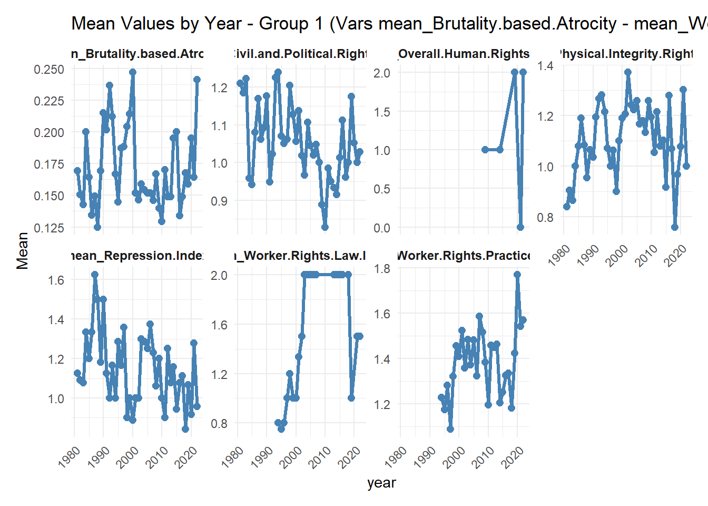

library(readr)Warning: package 'readr' was built under R version 4.3.3library(dplyr)Warning: package 'dplyr' was built under R version 4.3.3
Attaching package: 'dplyr'The following objects are masked from 'package:stats':
filter, lagThe following objects are masked from 'package:base':
intersect, setdiff, setequal, uniondf <- read.csv("database.csv")
library(dplyr)
# Select columns 8 to 26 and Year column
col_indices <- 9:15
target_cols <- names(df)[col_indices]
print(paste("Processing columns:", paste(target_cols, collapse = ", ")))[1] "Processing columns: Overall.Human.Rights.Score, Physical.Integrity.Rights.Index, Repression.Index, Civil.and.Political.Rights.Index, Worker.Rights.Practice.Index, Worker.Rights.Law.Index, Brutality.based.Atrocity"# Filter function: only use values 0,1,2 (omit others/NA)
mean_filtered <- function(x) {
valid_vals <- x[x %in% c(0, 1, 2)]
if(length(valid_vals) > 0) mean(valid_vals) else NA
}
# Calculate mean for each column by Year, using only 0,1,2 values
means_by_year <- df %>%
select(year, all_of(target_cols)) %>%
group_by(year) %>%
summarise(across(all_of(target_cols), mean_filtered, .names = "mean_{.col}")) %>%
ungroup()
# View results
#print(means_by_year)
library(ggplot2)Warning: package 'ggplot2' was built under R version 4.3.3library(tidyr)
library(dplyr)
# Reshape to long format
means_long <- means_by_year %>%
pivot_longer(-year, names_to = "Variable", values_to = "Mean") %>%
filter(!is.na(Mean))
# Fix: Dynamically create scales for EXACT number of variables
n_vars <- length(unique(means_long$Variable))
line_types <- c(rep("solid", ceiling(n_vars/2)), rep("dashed", floor(n_vars/2)))
library(ggplot2)
library(tidyr)
library(dplyr)
library(ggplot2)
library(dplyr)
library(patchwork)Warning: package 'patchwork' was built under R version 4.3.3# Split 42 variables into groups of 12 panels each
var_list <- unique(means_long$Variable)
n_groups <- ceiling(length(var_list) / 12) # ~4 plots
# Create plots for each group
plot_list <- list()
for(i in 1:n_groups) {
vars_subset <- var_list[((i-1)*12 + 1):min(i*12, length(var_list))]
p <- ggplot(means_long %>% filter(Variable %in% vars_subset),
aes(x = year, y = Mean, group = 1)) +
geom_line(linewidth = 1.1, color = "steelblue") +
geom_point(size = 2.2, color = "steelblue") +
facet_wrap(~ Variable, scales = "free_y", ncol = 4, nrow = 3) +
labs(title = paste("Mean Values by Year - Group", i, "(Vars", min(vars_subset), "-", max(vars_subset), ")")) +
theme_minimal() +
theme(strip.text = element_text(size = 9, face = "bold"),
axis.text.x = element_text(angle = 45, hjust = 1))
plot_list[[i]] <- p
}
# Combine into single object or save separately
combined_plot <- wrap_plots(plot_list, ncol = 1) # Stack vertically
print(combined_plot)